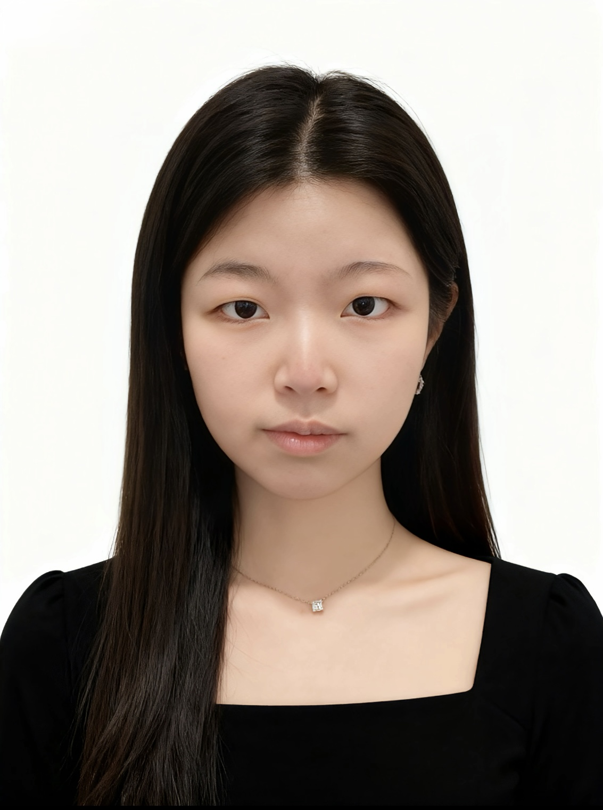

Professional Portfolio
Creative work, visual communication, and photography in one portfolio.
My name is Ferni Xiao. I am a student interested in photography, digital media, and visual communication. This website presents my selected work, professional background, and creative skills in a clear and organized format.
View My Work
About This Website
This website was designed as a professional identity hub for a hiring manager or internship reviewer. It combines portfolio work, resume information, contact details, and design documentation in a single responsive website.
Featured Work

Frozen Motion